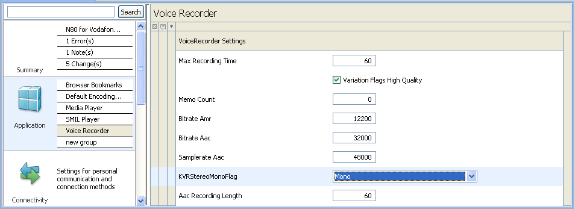
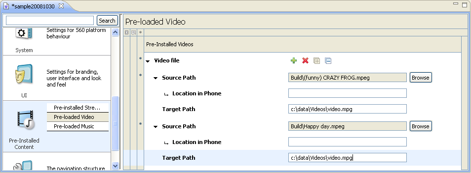
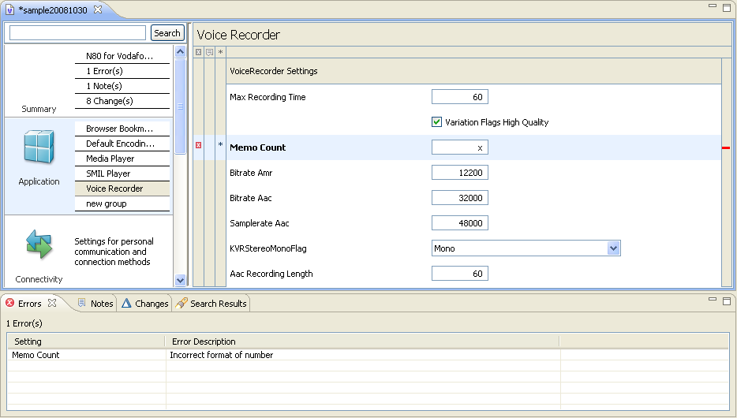
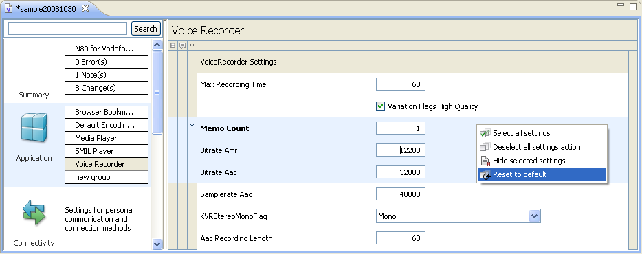
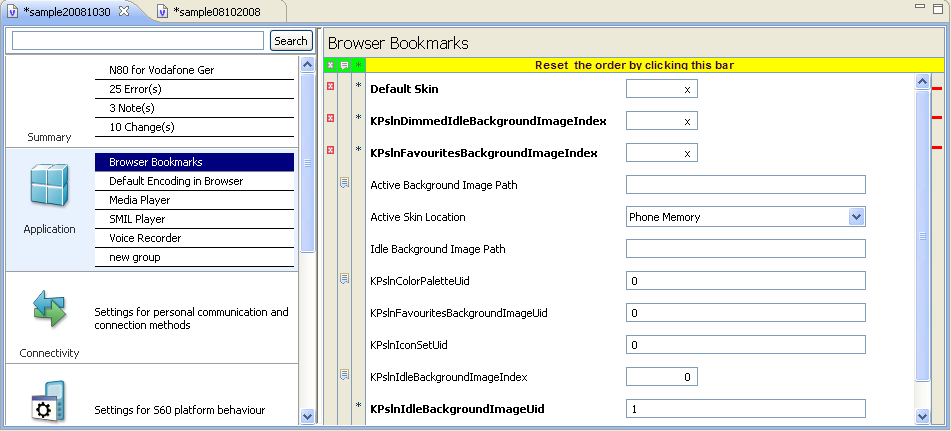
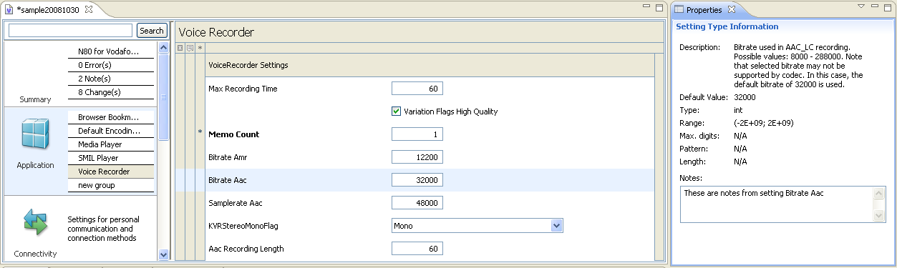

Working with Settings
Editing Values of Settings
Situation: You want to edit the value of a setting.
- Browse to the setting in the software variant proposal form (or use Search to jump to the setting).
- Fill out the value of the setting by typing in freetext, selecting the correct option(s) or associating a resource to the setting.
Carbide.v displays the value in the software variant proposal form with the setting.
The setting's name font is shown bold in the editor to notify that the setting has been changed.
Setting is added to the list of changed settings Changes view
The setting's name font is shown bold in the editor to notify that the setting has been changed.
Setting is added to the list of changed settings Changes view

Editing Sequence Settings
Editing Sequence Items
Situation: You want to edit the value of a setting which contains a sequence.
- Browse to the setting in the software variant proposal form (or use Search to jump to the setting).
- Expand the sequence's items by clicking the expand all button.
- Select the sequence item you want to edit
- Edit the subsettings' values by typing in freetext, selecting the correct option(s) or associating a resource to the setting.
Carbide.v displays the value in the software variant proposal form with the setting.
The setting's name font is shown bold in the editor to notify that the setting has been changed.
Setting is added to the list of changed settings(Changes view)
The setting's name font is shown bold in the editor to notify that the setting has been changed.
Setting is added to the list of changed settings(Changes view)
Adding Sequence Items
Situation: You want to add a new item to a setting which contains a sequence.
- Browse to the setting in the software variant proposal form (or use Search to jump to the setting).
-
Add new sequence item by pressing the
 add new sequence item button.
add new sequence item button.
- Fill out the particular settings' values of the sequence item by typing in freetext, selecting the correct option(s) or associating a resource to the setting.
Carbide.v displays the value in the software variant proposal form with the setting.
The setting's name font is shown bold in the editor to notify that the setting has been changed.
Setting is added to the list of changed settings(Changes view)
The setting's name font is shown bold in the editor to notify that the setting has been changed.
Setting is added to the list of changed settings(Changes view)
Removing Sequence Items
Situation: You want to remove an item from a setting which contains a sequence.
- Browse to the setting in the software variant proposal form (or use Search to jump to the setting).
- Expand the sequence's items by clicking the expand all button.
- Select the item you want to remove and press the remove sequence item button.
Carbide.v removes previously selected setting item from the editor.
The setting's name font is shown bold to notify that the setting has been changed.
Setting is added to the list of changed settings(Changes view)
The setting's name font is shown bold to notify that the setting has been changed.
Setting is added to the list of changed settings(Changes view)

Validating Values of Settings for Correctness
Situation: You want to feel sure that you only fill out settings with values in correct format.
-
Type a value in correct format to a setting field.
Carbide.v accepts and displays the value in the form. If you have typed an erraneus value to the format, Carbide. v can display one of the following validation errors:
- Numbers
- Incorrect format of number
- Minimum value is not reached
- Maximum value is exceeded
- The maximum number if digits is exceeded
- The value doesn't match pattern
- Strings
- Exact length is not matched
- Minimum length of string is not reached
- Maximum length of string is exceeded
- The value doesn't match pattern
- Dates and times
- Incorrect format of date
- Incorrect format of time
- Incorrect format of date time
- Incorrect format of duration
- Sequences
- Minimum number of sequences is not reached
- Maximum number of sequences exceeded
- Files and others
- File is not in the Resources Library
- Directory is not in the Resources Library
- Value is missing
Carbide.v notifies that by displaying a red marker on the particular row in the editor.
Setting is added to the list of errorneous settings in the Errors view.

Selecting Settings
Situation: You want to do something (for instance hide) with one or more settings.
- To select one setting, simply click the setting.
- To select several settings, press Ctrl key down and click each of the settings.
- To select all settings in a group of settings, click your right mouse button on the form and select 'Select all' in the context menu or click the particular toolbar button.
Carbide.v highlights the setting(s) that you selected and you may perform an operation on it or them.
Restoring Settings to their Default Values
Situation: You want to have the default value for a setting instead of the altered one.
- Select one or mote settings.
- Click right mouse button and select Restore to default in the context menu or click the particular toolbar button.
The values of the settings are the default ones again.

Sorting of settings
Situation: You want to sort out the settings by their status markers.
- Open a group with the settings.
- Precondition: Change setting(s) value(s), append notes to them.
- Depending the user steps each setting can be marked with none to three diffrent status markers: Changed status, Error status, Note appended status.
- You can sort out the settings in th editor clicking the particular Sort icons (highlighted green) or reset the sorting by clicking the empty bar on the top (highlighted yellow)
- Sort out buttons
- - settings with errors to be displayed on the top
- - settings with appended notes to be displayed on the top
- - settings with changes to be displayed on the top
The settings in the editor are sorted out accordingly.

Appending Notes to Settings
Situation: You want to inform another Carbide.V user about something related to an individual setting.
- Click the setting in the proposal form.
- Type your message in the Note field of the setting Properties pane.
The note is visible in the Properties pane of the setting an also listed in the software variant proposal Summary page to all Carbide.v users that handle later on the same software variant proposal.
Carbide.V displays a note marker on the particular row in the editor. Setting is added to the list of settings with appended notes in the Notes view.
Carbide.V displays a note marker on the particular row in the editor. Setting is added to the list of settings with appended notes in the Notes view.

Hiding Settings
Situation: You want to remove a setting that is not needed to be changed.
- Select the setting(s) that you want to remove. Use Ctrl key for multiselection.
- Click your right mouse button and select 'Hide selected settings' in the context menu or click the appropriate toolbar button
Carbide.v removes selected settings from the current group.
Relevant setting option
Situation: The subgroup contains a setting that is visible only if certain costraints are met. You want the setting to be visible in the editor.
- Find out the setting contrains.
- Meet the setting contrains by setting the right value of an appropriate setting.
Carbide.v shows previously hidden setting in the appropriate group.